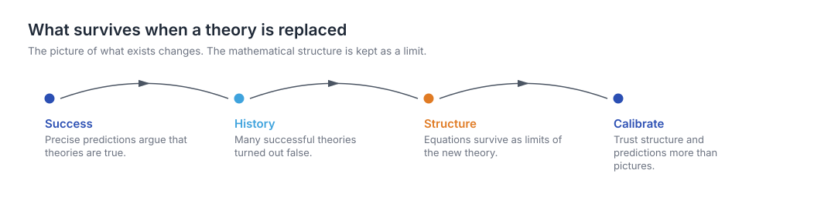

Guides · Philosophy
Are our best theories true?
Scientific theories predict with astonishing precision, yet history is full of successful theories that turned out false. Structural realism offers a way out. Theories may be wrong about what exists and still right about the mathematical structure of the world.
Path · Thinking about science · step 2 of 4
Next in this path: Science is a strong-link problem →
Every researcher eventually asks what a successful theory tells us about the world. Is an electron a real thing, or a useful fiction in a very good calculation? The question is old, but it is not idle. It shapes how firmly you should believe the theories you use, and it gives mathematics a surprising place in the answer.
The argument from success#
Some physical theories predict measured quantities to many decimal places and have predicted new particles before anyone observed them. It would be a miracle if a theory that badly misdescribed the world did so well. This is the no-miracles argument, associated with the philosopher Hilary Putnam. It supports scientific realism: our best theories are approximately true, and the unobservable things they posit really exist.
The argument from history#
The history of science pulls the other way. Many theories were spectacularly successful and still false:
- The caloric theory treated heat as a fluid and explained much of thermodynamics.
- The ether carried light waves in Fresnel's optics, which predicted new optical effects.
- Newtonian gravity is a force acting instantly at a distance. General relativity replaced it with the curvature of spacetime.
The philosopher Larry Laudan drew the conclusion known as the pessimistic meta-induction: past successful theories were false, so our present successful theories are probably false too. Anti-realists such as Bas van Fraassen conclude that we should accept theories as empirically adequate, good at predicting what we can observe, without believing what they say about the unobservable.
Structural realism#
The philosopher John Worrall proposed a middle way in 1989. When a successful theory is replaced, its picture of what exists may be discarded, but its mathematical structure usually survives. Fresnel's equations for light survived the disappearance of the ether. Newton's equations reappear inside Einstein's as a limit at low speeds and weak fields. This is the correspondence principle.
Structural realism says that our best theories are right about the structure of the world, the mathematical relations they describe, even when they are wrong about the things that carry that structure. It explains both arguments at once:
- Theories succeed because their structure is right, so the success is no miracle.
- Their ontology changes over time, as history shows, while their structure is preserved and extended.
Many philosophers of science regard it as the most defensible form of realism, though it faces its own objections, in particular whether structure and content can really be separated.
Why a mathematician might care#
If structural realism is right, the part of a theory that lasts is its mathematics. This gives one answer to Eugene Wigner's question about the "unreasonable effectiveness of mathematics" in physics: the mathematics is the part that was tracking the world all along. It also explains a familiar pattern in mathematical physics, where a new framework must contain the old one as a special case or a limit.
What this changes for you#
- Hold theories with calibrated confidence. Trust the predictions and the structure of a well-tested theory strongly. Hold its picture of what exists more lightly.
- Check the limits. When you generalise a theory or a construction, verify that it reduces to the known one in the appropriate limit or special case. A new framework that loses the old structure is suspect.
- Distinguish models from reality in your writing. Say clearly when an object is a convenient model and when you claim it describes the world.
Checklist#
- I can say which parts of the theory I use are tested structure and which are interpretation.
- My generalisation recovers the known case as a limit or a special case.
- My paper does not present a model as a literal description without saying so.
Summary#
- The success of science argues for realism. The history of science argues against it.
- Structural realism: theories can be wrong about what exists and right about the structure.
- Successful structure is preserved when theories are replaced, as limits or special cases.
- Trust structure and predictions more than pictures.
Further reading#
This guide draws on an essay on Substack:
- Bentham's Bulldog, The Biggest Unsolved Problem in Philosophy of Science, Bentham's Newsletter, 2025.
For more depth, see the entry Structural Realism in the Stanford Encyclopedia of Philosophy, and John Worrall, Structural realism: the best of both worlds?, Dialectica 43 (1989).
Discussion
Questions, corrections and your own experience are welcome. Comments live in the forum, on GitHub Discussions, with Markdown and LaTeX.